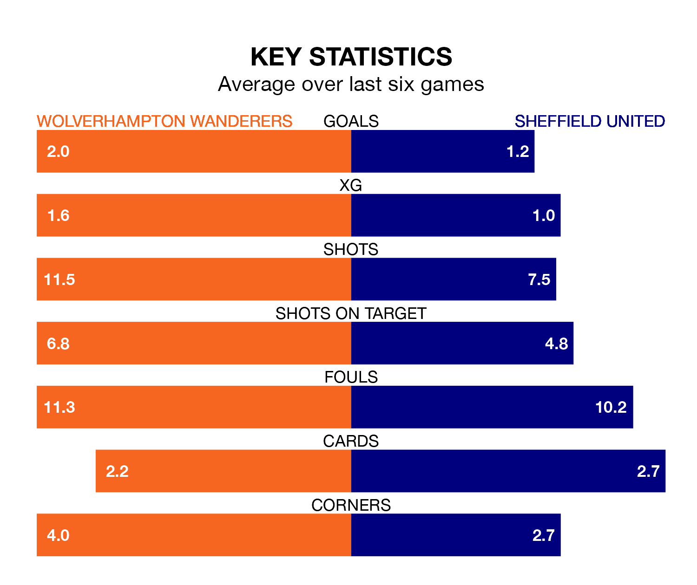

Wolverhampton Wanderers are heavy favourites to keep all three points at home in Sunday lunchtime's kick-off against Sheffield United.
Wolves, who sit 11th in the Premier League with 25 games played, are priced at 1.4 to seal victory at the Molineux Stadium.
Sitting nine places and 22 points behind them in the table, United are 6.0 to win with *Betting Company*, while the draw is at 4.5.
In the last 10 years, Wolves and United have played each other on nine occasions. Wolves won five of them, United three, and they drew once.
On average, Wolves scored 1.4 goals and the Blades 0.7 in those matches.
Their last meeting was on November 4, when United won 2-1 at home.
Wolves are in mixed form in the Premier League, with three wins and a draw from their last six games.
With a win and a draw over that period, United's form is much worse – they have taken four points from 18, compared to the home side's 10.
With 22 goals in 25 games so far this season, the Blades are the league's lowest scorers with 0.9 goals per game. And they are conceding more than average, letting in 65 goals at a rate of 2.6 per game.
Wolves, meanwhile, are average scorers, with 1.6 goals per game. They have also conceded 1.6 goals per game.
Wolves's Pedro Neto is among the league's most creative players, racking up nine assists in 16 appearances so far this season, and holding third spot in the Premier League's assist charts.
For the visitors, Gustavo Hamer has set up the most goals, having laid on three assists in 23 games.
Wolves's last match was on February 17, a 2-1 win against Tottenham Hotspur, with João Gomes getting the goals for Wolves.
United lost 5-0 against Brighton and Hove Albion last time out, on Sunday.
Updated: 12:18 (UTC), 19/02/24